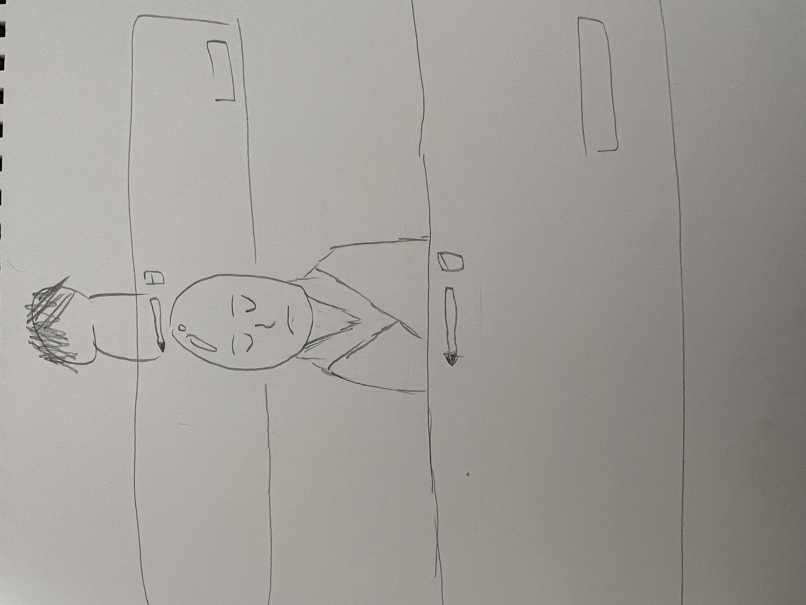
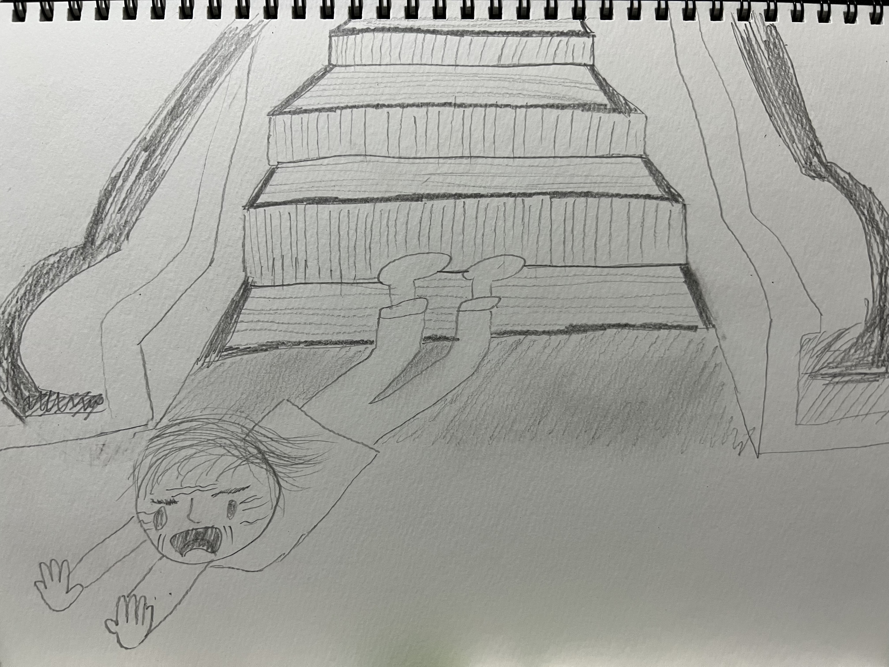

観察課題
試験前に瞑想していたお坊さん

観察日2022年11月4日 場所：神奈川警察運転免許センター
免許を取るため免許センターの学科試験を受けに行ったら瞑想しているお坊さんが真ん中の一番前に座っていました。
転んだおばさん

観察日2022年11月10日 場所：横浜駅相鉄線改札付近
エスカレーターを降りてすぐいきなり目の前でおばさんが倒れました。
隣でそんなの見るな
観察日2022年1月20日 場所：大和駅 電車内
大和駅で隣に座ってきたおじさんがBLのアダルトビデオを見ていて鳥肌が立ちました。